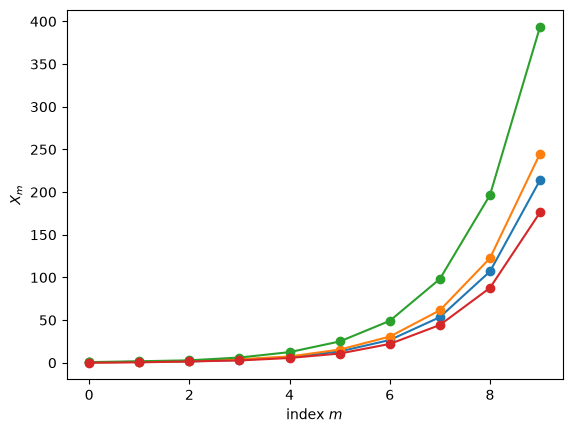
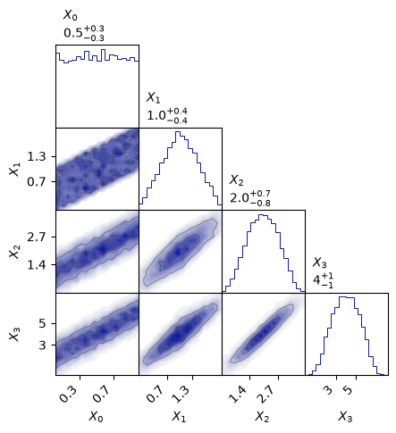

20.1. Stochastic processes#
“Stochastic, or random, processes is the dynamic side of probability. What differential equations is to calculus, stochastic processes is to probability.”
—Robert P. Dobrow, Introduction to Stochastic Processes with R
A stochastic (random) process is simply one in which outcomes are uncertain. By contrast, a deterministic process always produces the same result for a given input. While functions and differential equations are often used to describe deterministic processes, we can use random variables and probability distribution functions to describe stochastic ones.
Stochastic processes are very useful for the modeling of systems that have inherent randomness. This is certainly true in physics, and not the least for quantum systems. We will not delve deep into this topic in these notes. You might encounter stochastic modeling in the future when studying, for example, statistical physics.
Instead, our specific goal is to become familiar with a special kind of stochastic processes known as Markov chains. Having defined and studied general properties, we will find that such chains be designed to produce samples from a stationary probability distribution of our choice.
Discuss
Why is it so useful in Bayesian inference to be able to produce samples from a user-specified probability distrbution?
Example 20.1 (An exponential growth model)
Consider a simple exponential growth model to describe a population of bacteria in a culture with a food source. In a deterministic model we assert that the population grows at a fixed rate \(\lambda\). The growth rate is then proportional to the population size as described by the differential equation
With the initial population \(y(0) = y_0\), this equation is solved by the exponential function
from which the population is precisely determined. For example, with \(y_0 = 10\) and \(\lambda = 0.25\) per minute we find that the population has almost doubled four times after 11 minutes (since \(y(11) = 15.6 \approx 16\)).
This model, however, does not take into account the randomness of the reproduction of individual organisms. This can be considered in a stochastic growth model where we assign the probability \(\lambda \Delta t\) for a single bacteria to split once during a (very short) time interval \(\Delta t\). This random process can be simulated using a short python script (click below to show the code). Ten different realizations of the stochastic model are visualized in Fig. 20.1 and compared with the deterministic one. Questions that might be of scientific interest include:
What is the expected number of bacteria at time \(t\)?
What is the probability that the number of bacteria will exceed some threshold value after \(t\) minutes?
What is the distribution of the time it takes for the population to double in size?
Fig. 20.1 Growth of a bacteria population. The deterministic exponential growth curve is plotted against a number of realizations of a stochastic growth process. We find for example that 65% of the processes give 100 bacteria after ten minutes.#
Definition of a stochastic process#
Using probability theory, a stochastic process \(X\) is a family
of random variables \(X_t\) indexed by some set \(T\). All the random variables take values in a common state space, \(S\). The state space can be discrete or continuous. Although we might use discrete state spaces in some of the examples, one should realize that most examples in physics belong to the continuous type.
Furthermore, the family is known as discrete process if the indices take discrete values \(t \in \{0,1,2,\ldots\}\). This will in fact be the situation in the practical application of Markov chain Monte Carlo applications that we are aiming for. On the other hand, many physical stochastic processes are continuous and will have \(T \in \mathbb{R}\) or \(t \in [0,\infty)\). In either case we think of a stochastic process as a family of variables that evolve as time passes, although in general \(T\) might be any kind of ordering index and is not restricted to physical time.
Due to the randomness, different runs of the stochastic process will generate different sequences of outputs. An observer recording many such sequences generated from the same stochastic process would need to measure all the following conditional probabilities to fully describe the process:
Example 20.2 (Conditional probabilities of a stochastic process)
Below is an example of a stochastic process (implemented using an abstract python class StochasticProcess).
Note that the process indeed is defined by:
the distribution of the first random variable \(X_0\), which is included in the definition of class method
start, andthe conditional distributions for subsequent variables (as defined in the class method
update).
Two relevant visualizations are also included in the example below
Plots of the first variables from a few runs.
A corner plot of bivariate and univariate marginal distributions.
import numpy as np
import sys
import os
# Adding ../assets/ to the python module search path
sys.path.insert(0, os.path.abspath('../assets/'))
from StochasticProcess.StochasticProcess import StochasticProcess as SP
class StochasticProcessExample(SP):
def start(self,random_state):
return random_state.uniform()
def update(self, random_state, history):
return np.sum(history) + random_state.uniform()
# Create an instance of the class. It is possible to provide a seed
# for the random state such that results are reproducible.
example = StochasticProcessExample(seed=1)
# The following method call produces 4 runs, each of length 10.
example.create_multiple_processes(10,4)
# and here plotted
fig_runs, ax_runs = example.plot_processes()

# Pretty corner plots generated with `prettyplease`
# https://github.com/svisak/prettyplease
import prettyplease as pp
# Here we instead create 10,000 runs (to collect statistics), each of length 4.
example.create_multiple_processes(4,10000)
fig_corner = pp.corner(example.sequence.T,labels=[fr'$X_{{{i}}}$' for i in range(13)])

Exercise 20.1
Can you understand the initialization and update rules of Example 20.2?
Exercise 20.2
For each panel of the pairplot above:
What conditional distribution of random variables does each panel show?
What random variables are marginalized out, if any?
Explain how the pairplot answers the question “Are \(X_3\) and \(X_0\) independent?”?
Hints:
The top-left panel shows \(\p{X_0}\), with no marginalization since \(X_0\) starts the random sequence.
The independence of \(X_3\) and \(X_0\) would imply \(\pdf{X_3}{X_0}=\p{X_3}\).
Exercise 20.3
Define your own stochastic process by creating your own initial and update methods within the StochasticProcess class. Explore the conditional probabilities by creating many chains and making plots.
Solutions to selective exercises#
Here are answers and solutions to selected exercises.
Solution to Exercise 20.1
The initial variable is from a uniform distribution: \(p_{X_0}(x_0) = \mathcal{U}\left( [0,1] \right)\).
Variable \(X_n\) is obtained from \(p_{X_n \vert X_0, X_1, \ldots, X_{n-1}} \left( x_n | x_0, x_1, \ldots, x_{n-1} \right) = \mathcal{U}\left( [0,1] \right) + \sum_{i=0}^{n-1} x_i\)
Solution to Exercise 20.2
The histograms on the diagonal show the distributions \(\p{X_n}\) which are marginalized over \(X_{n−1}, \ldots, X_0\). The off-diagonal plots show the joint distributions \(\p{X_i,X_j}\) which are marginalized over \(X_{n−1}, \ldots, X_0\) with \(n=\max(i,j)\) and excluding \(X_{\min(i,j)}\). Note that these are distributions of random variables \(X_n\), not random values \(x_n\).
More explicitly:
\(\p{X_0}\) has no correlated random variables marginalized out since it starts the sequence.
\(\p{X_1}\) is marginalized over \(X_0\).
\(\p{X_2}\) is marginalized over \(X_1,X_0\).
\(\p{X_3}\) is marginalized over \(X_2,X_1,X_0\).
\(\p{X_0,X_1}\) has no correlated random variables marginalized out.
\(\p{X_1,X_2}\) is marginalized over \(X_0\).
\(\p{X_2,X_3}\) is marginalized over \(X_0, X_1\).
\(\p{X_1,X_3}\) is marginalized over \(X_0, X_2\).
\(\p{X_0,X_3}\) is marginalized over \(X_1, X_2\).
\(\p{X_0,X_2}\) is marginalized over \(X_1, X_3\).
The dependence of \(X_3\) on \(X_0\) is not directly observed since \(\pdf{X_3}{X_0}\) is not shown. However, from Eq. (39.2) we have that \(\pdf{X_3}{X_0} = \p{X_0,X_3} / \p{X_0}\). And since \(\p{X_0}\) is uniform, we find that \(\pdf{X_3}{X_0} \neq \p{X_3}\). In other words, \(X_3\) “remembers” \(X_0\).
Solution to Exercise 20.3
Here’s one possible solution. It is a slightly more general random walk.
class exerciseSP(SP):
def start(self,random_state):
return random_state.uniform()
def update(self, random_state, history):
return history[-1] + random_state.uniform())